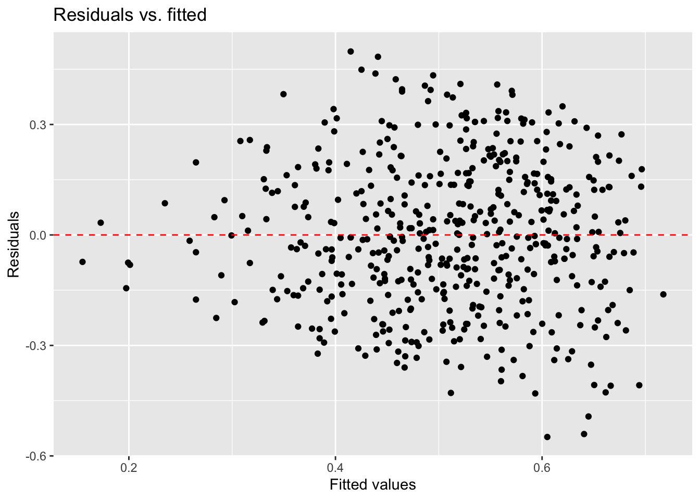
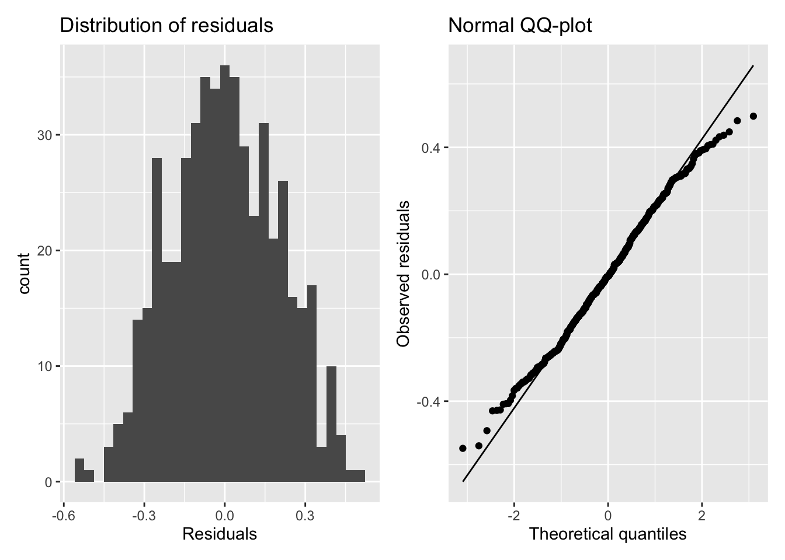

library(tidyverse)
library(tidymodels)
library(knitr)
library(patchwork) #arrange plots in a gridAE 07: Model evaluation
Songs on Spotify
Important
Go to the course GitHub organization and locate your ae-07 repo to get started.
Render, commit, and push your responses to GitHub by the end of class. The responses are due in your GitHub repo no later than Thursday, September 28 at 11:59pm.
Data
The data set for this assignment is a subset from the Spotify Songs Tidy Tuesday data set. The data were originally obtained from Spotify using the spotifyr R package.
It contains numerous characteristics for each song. You can see the full list of variables and definitions here. This analysis will focus specifically on the following variables:
| variable | class | description |
|---|---|---|
| track_id | character | Song unique ID |
| track_name | character | Song Name |
| track_artist | character | Song Artist |
| track_popularity | double | Song Popularity (0-100) where higher is better |
| energy | double | Energy is a measure from 0.0 to 1.0 and represents a perceptual measure of intensity and activity. Typically, energetic tracks feel fast, loud, and noisy. For example, death metal has high energy, while a Bach prelude scores low on the scale. Perceptual features contributing to this attribute include dynamic range, perceived loudness, timbre, onset rate, and general entropy. |
| valence | double | A measure from 0.0 to 1.0 describing the musical positiveness conveyed by a track. Tracks with high valence sound more positive (e.g. happy, cheerful, euphoric), while tracks with low valence sound more negative (e.g. sad, depressed, angry). |
spotify <- read_csv("data/spotify-popular.csv")Are high energy songs more positive? To answer this question, we’ll analyze data on some of the most popular songs on Spotify, i.e. those with track_popularity >= 80. We’ll use linear regression to fit a model to predict a song’s positiveness (valence) based on its energy level (energy).
Below are plots as part of the exploratory data analysis.
p1 <- ggplot(data = spotify, aes(x = valence)) +
geom_histogram() +
labs(title = "Distribution of Valence",
subtitle = " for Popular songs on Spotify",
x = "Valence")
p2 <- ggplot(data = spotify, aes(x = energy)) +
geom_histogram() +
labs(title = "Distribution of Energy",
subtitle = "for Popular songs on Spotify",
x = "Energy")
p1 + p2
ggplot(data = spotify, aes(x = energy, y = valence)) +
geom_point() +
labs(title = "Valence vs. Energy",
subtitle = "Popular songs on Spotify",
x = "Energy",
y = "Valence")
Model with 90% CI for coefficients
spotify_fit <- linear_reg() |>
fit(valence ~ energy, data = spotify)
tidy(spotify_fit, conf.int = TRUE, conf.level = 0.9) |>
kable(digits = 3)| term | estimate | std.error | statistic | p.value | conf.low | conf.high |
|---|---|---|---|---|---|---|
| (Intercept) | 0.121 | 0.035 | 3.401 | 0.001 | 0.062 | 0.179 |
| energy | 0.614 | 0.054 | 11.321 | 0.000 | 0.525 | 0.703 |
Create augmented data frame
spotify_aug <- augment(spotify_fit$fit)Create residual plots
ggplot(data = spotify_aug, aes(x = .fitted, y = .resid)) +
geom_point() +
geom_hline(yintercept = 0, color = "red", linetype = "dashed") +
labs(x = "Fitted values",
y = "Residuals",
title = "Residuals vs. fitted")
resid_hist <- ggplot(data = spotify_aug, aes(x = .resid)) +
geom_histogram() +
labs(x = "Residuals",
title = "Distribution of residuals")
resid_qq <- ggplot(data = spotify_aug, aes(sample = .resid)) +
stat_qq() +
stat_qq_line() +
labs(x = "Theoretical quantiles",
y = "Observed residuals",
title = "Normal QQ-plot")
resid_hist + resid_qq
Exercise 1
Assess the four model conditions. State whether the condition is satisfied and briefly explain your response.
- Linearity
- Constant variance
- Normality
- Independence
Exercise 2
Calculate \(R^2\) and interpret this value in the context of the data.
Exercise 3
Calculate RMSE and interpret this value in the context of the data.
Evaluate response from ChatGPT
I typed the following prompt into ChatGPT (“an AI powered language model”) “How do you check the model conditions for simple linear regression?”
The response from ChatGPT shown below would receive partial credit. For each condition, state whether it is (1) correct, (2) incorrect and if so, what is wrong, (3) incomplete and if so, what is missing.
In simple linear regression, you’re trying to establish a linear relationship between two variables: a dependent variable (Y) and an independent variable (X). The model conditions or assumptions for simple linear regression are important to check to ensure that your model is valid and reliable. Here are the key assumptions and how to check them:
1. Linearity Assumption:
- Assumption: The relationship between the independent variable (X) and the dependent variable (Y) is linear.
- How to Check: Create a scatterplot of Y against X. If the points roughly form a straight line, the linearity assumption is likely met.
2. Independence Assumption:
- Assumption: The residuals (the differences between observed Y and predicted Y) are independent of each other.
- How to Check: Plot the residuals against the independent variable (X) or the predicted values. Look for patterns or trends in the residuals. There should be no clear structure or autocorrelation in the residuals.
3. Homoscedasticity [Constant variance] Assumption:
- Assumption: The variance of the residuals is constant across all levels of the independent variable.
- How to Check: Plot the residuals against the predicted values or the independent variable (X). The spread of the residuals should remain roughly constant across the range of X.
4. Normality Assumption:
- Assumption: The residuals follow a normal distribution.
- How to Check: Create a histogram or a normal probability plot (Q-Q plot) of the residuals. If the residuals are approximately normally distributed, they should follow a bell-shaped curve in the histogram and lie along a straight line in the Q-Q plot.
It’s important to note that these assumptions may not always hold perfectly in real-world data, and minor violations may not necessarily invalidate your model. However, if you detect significant violations of these assumptions, you may need to consider alternative modeling techniques or transformations of your data to address the issues.
Note
You will start to think about the answer in class and come up with a final answer with your group in Lab 04.
To submit the AE:
Important
- Render the document to produce the PDF with all of your work from today’s class.
- Push all your work to your
ae-07repo on GitHub. (You do not submit AEs on Gradescope).